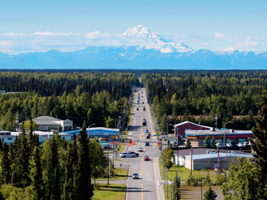

Soldotna
In 1947 Soldotna was founded by Veterans. The discovery of oil in nearby Swanson River immediately boosted the population and economy of the area. In 1967 it became fully incorporated after the first bridge into Soldotna was constructed.Our town is bisected by the Kenai River. Here the largest Alaskan Salmon in the world was caught by a local fisherman. Downtown Soldotna serves as as community gathering space, with open greenspace, river boardwalks, picnic pavilions, an amphitheater, and year-round public restrooms.
Places to Eat
Here in Soldtna you can eat at Fronso's Family Dinner, The Catch Restaurant and Bar, and Addie Camp.
Places to Stay
Here in Soldotna you can stay in our cozy little inns such as teh Kenai River Lodge, King's Haven Lodge, and Alaskan Christian College which offers dorms to tourist.
Entertainment
Here in Soldotna we have many store to visit. Our main attraction is the Kenai River which you can fish at on the daily. Along the River bank we have prepping stations for the fish you catch.